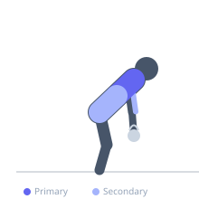
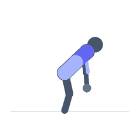

Exercise guide / Gorilla Row — Alternating Kettlebell
Gorilla Row — Alternating Kettlebell
The gorilla row is performed with two kettlebells on the floor in a hip-hinge position, alternating rows with each arm while the other holds the kettlebell stationary on the floor. The alternating action requires significant anti-rotation core stability, as the shifting load constantly challenges the obliques. The ground-based starting position adds a natural dead-stop at each repetition, eliminating momentum between reps.
Primary muscles
latissimus dorsi
rhomboid major
Secondary muscles
biceps brachii long head
erector spinae
Stabilizers
internal oblique
external oblique
transverse abdominis
Equipment
Kettlebell


Starting position
- Place two matching kettlebells on the floor, positioned shoulder-width apart. Stand between them and hinge at the hips to approximately parallel. Grip both kettlebells while maintaining a neutral spine.
Setup
- Use matching kettlebells. The hip hinge position must be maintained throughout the entire set.
Steps
- Step 1: Hinge to roughly parallel, gripping both kettlebells on the floor.
- Step 2: Brace the core hard against the anti-rotation demand.
- Step 3: Row one kettlebell to the hip while the other stays on the floor.
- Step 4: Return the rowed kettlebell to the floor under control.
- Step 5: Immediately row the other side. Continue alternating.
Coaching cues
- Hips stay square — no rotating
- Dead stop each rep on the floor
- Brace your core like you're taking a punch
Breathing
- Exhale on each row, maintain bracing between alternating reps.
Range of motion
- Kettlebell returns to floor between each rep, pulled to hip level at the top.
Tempo
- 2-0-2-0 per side
Common mistakes
- Rotating the hips when switching arms — maintain square hips
- Letting the stationary kettlebell move on the floor
- Rising out of the hip hinge during the set
Safety
- The hip hinge must be maintained for the duration — fatigue causing the torso to rise places greater lumbar load
- Ensure kettlebells will not tip — use flat-bottomed kettlebells on a flat surface
Training
- strength: 6–10 reps
- hypertrophy: 10–15 reps
- strength: 3–4 sets
- hypertrophy: 3–4 sets
- Rest: {'strength': 150, 'hypertrophy': 90}